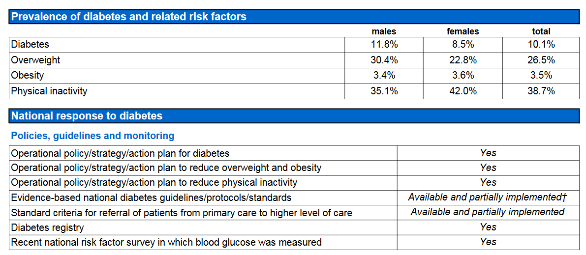

11.1 PDF
It is often the case that data is trapped inside pdfs, but thankfully there are ways to extract it from the pdfs. A very nice package for this task is pdftools.
Each string in the vector contains a plain text version of the text on that page.
txt <- pdf_text("data/1403.2805.pdf")
# first page text
cat(txt[1])
#> The jsonlite Package: A Practical and Consistent Mapping
#> Between JSON Data and R Objects
#> Jeroen Ooms
#> arXiv:1403.2805v1 [stat.CO] 12 Mar 2014
#> UCLA Department of Statistics
#> Abstract
#> A naive realization of JSON data in R maps JSON arrays to an unnamed list, and JSON objects to a
#> named list. However, in practice a list is an awkward, inefficient type to store and manipulate data.
#> Most statistical applications work with (homogeneous) vectors, matrices or data frames. Therefore JSON
#> packages in R typically define certain special cases of JSON structures which map to simpler R types.
#> Currently there exist no formal guidelines, or even consensus between implementations on how R data
#> should be represented in JSON. Furthermore, upon closer inspection, even the most basic data structures
#> in R actually do not perfectly map to their JSON counterparts and leave some ambiguity for edge cases.
#> These problems have resulted in different behavior between implementations and can lead to unexpected
#> output. This paper explicitly describes a mapping between R classes and JSON data, highlights potential
#> problems, and proposes conventions that generalize the mapping to cover all common structures. We
#> emphasize the importance of type consistency when using JSON to exchange dynamic data, and illustrate
#> using examples and anecdotes. The jsonlite R package is used throughout the paper as a reference
#> implementation.
#> 1 Introduction
#> JavaScript Object Notation (JSON) is a text format for the serialization of structured data (Crockford, 2006a).
#> It is derived from the object literals of JavaScript, as defined in the ECMAScript Programming Language
#> Standard, Third Edition (ECMA, 1999). Design of JSON is simple and concise in comparison with other
#> text based formats, and it was originally proposed by Douglas Crockford as a “fat-free alternative to XML”
#> (Crockford, 2006b). The syntax is easy for humans to read and write, easy for machines to parse and generate
#> and completely described in a single page at http://www.json.org. The character encoding of JSON text
#> is always Unicode, using UTF-8 by default (Crockford, 2006a), making it naturally compatible with non-
#> latin alphabets. Over the past years, JSON has become hugely popular on the internet as a general purpose
#> data interchange format. High quality parsing libraries are available for almost any programming language,
#> making it easy to implement systems and applications that exchange data over the network using JSON. For
#> R (R Core Team, 2013), several packages that assist the user in generating, parsing and validating JSON
#> are available through CRAN, including rjson (Couture-Beil, 2013), RJSONIO (Lang, 2013), and jsonlite
#> (Ooms et al., 2014).
#> The emphasis of this paper is not on discussing the JSON format or any particular implementation for using
#> 1
# second page text
cat(txt[2])
#> JSON with R. We refer to Nolan and Temple Lang (2014) for a comprehensive introduction, or one of the
#> many tutorials available on the web. Instead we take a high level view and discuss how R data structures are
#> most naturally represented in JSON. This is not a trivial problem, particulary for complex or relational data
#> as they frequently appear in statistical applications. Several R packages implement toJSON and fromJSON
#> functions which directly convert R objects into JSON and vice versa. However, the exact mapping between
#> the various R data classes JSON structures is not self evident. Currently, there are no formal guidelines,
#> or even consensus between implementations on how R data should be represented in JSON. Furthermore,
#> upon closer inspection, even the most basic data structures in R actually do not perfectly map to their
#> JSON counterparts, and leave some ambiguity for edge cases. These problems have resulted in different
#> behavior between implementations, and can lead to unexpected output for certain special cases. To further
#> complicate things, best practices of representing data in JSON have been established outside the R community.
#> Incorporating these conventions where possible is important to maximize interoperability.
#> 1.1 Parsing and type safety
#> The JSON format specifies 4 primitive types (string, number, boolean, null) and two universal structures:
#> • A JSON object : an unordered collection of zero or more name/value pairs, where a name is a string and
#> a value is a string, number, boolean, null, object, or array.
#> • A JSON array: an ordered sequence of zero or more values.
#> Both these structures are heterogeneous; i.e. they are allowed to contain elements of different types. There-
#> fore, the native R realization of these structures is a named list for JSON objects, and unnamed list for
#> JSON arrays. However, in practice a list is an awkward, inefficient type to store and manipulate data in R.
#> Most statistical applications work with (homogeneous) vectors, matrices or data frames. In order to give
#> these data structures a JSON representation, we can define certain special cases of JSON structures which get
#> parsed into other, more specific R types. For example, one convention which all current implementations
#> have in common is that a homogeneous array of primitives gets parsed into an atomic vector instead of a
#> list. The RJSONIO documentation uses the term “simplify” for this, and we adopt this jargon.
#> txt <- "[12, 3, 7]"
#> x <- fromJSON(txt)
#> is(x)
#> [1] "numeric" "vector"
#> print(x)
#> [1] 12 3 7
#> This seems very reasonable and it is the only practical solution to represent vectors in JSON. However the
#> price we pay is that automatic simplification can compromise type-safety in the context of dynamic data.
#> For example, suppose an R package uses fromJSON to pull data from a JSON API on the web, similar to
#> the example above. However, for some particular combination of parameters, the result includes a null
#> value, e.g: [12, null, 7]. This is actually quite common, many APIs use null for missing values or unset
#> fields. This case makes the behavior of parsers ambiguous, because the JSON array is technically no longer
#> 2The package has some utilities to extract other data from the PDF file.
pdf_toc("data/1403.2805.pdf") %>% str(max.level = 3)
#> List of 2
#> $ title : chr ""
#> $ children:List of 6
#> ..$ :List of 2
#> .. ..$ title : chr "1 Introduction"
#> .. ..$ children:List of 4
#> ..$ :List of 2
#> .. ..$ title : chr "2 Converting between JSON and R classes"
#> .. ..$ children:List of 4
#> ..$ :List of 2
#> .. ..$ title : chr "3 Structural consistency and type safety in dynamic data"
#> .. ..$ children:List of 3
#> ..$ :List of 2
#> .. ..$ title : chr "Appendices"
#> .. ..$ children: list()
#> ..$ :List of 2
#> .. ..$ title : chr "A Public JSON APIs"
#> .. ..$ children:List of 3
#> ..$ :List of 2
#> .. ..$ title : chr "B Simple JSON RPC with OpenCPU"
#> .. ..$ children: list()
pdf_info("data/1403.2805.pdf")
#> $version
#> [1] "1.4"
#>
#> $pages
#> [1] 29
#>
#> $encrypted
#> [1] FALSE
#>
#> $linearized
#> [1] FALSE
#>
#> $keys
#> $keys$Producer
#> [1] "dvips + GPL Ghostscript GIT PRERELEASE 9.08"
#>
#> $keys$Creator
#> [1] "LaTeX with hyperref package"
#>
#> $keys$Title
#> [1] ""
#>
#> $keys$Subject
#> [1] ""
#>
#> $keys$Author
#> [1] ""
#>
#> $keys$Keywords
#> [1] ""
#>
#>
#> $created
#> [1] "2014-03-13 09:00:25 CST"
#>
#> $modified
#> [1] "2014-03-13 09:00:25 CST"
#>
#> $metadata
#> [1] "<?xpacket begin='' id='W5M0MpCehiHzreSzNTczkc9d'?>\n<?adobe-xap-filters esc=\"CRLF\"?>\n<x:xmpmeta xmlns:x='adobe:ns:meta/' x:xmptk='XMP toolkit 2.9.1-13, framework 1.6'>\n<rdf:RDF xmlns:rdf='http://www.w3.org/1999/02/22-rdf-syntax-ns#' xmlns:iX='http://ns.adobe.com/iX/1.0/'>\n<rdf:Description rdf:about='uuid:68dde9e4-e267-11ee-0000-a5c788a95450' xmlns:pdf='http://ns.adobe.com/pdf/1.3/'><pdf:Producer>dvips + GPL Ghostscript GIT PRERELEASE 9.08</pdf:Producer>\n<pdf:Keywords>()</pdf:Keywords>\n</rdf:Description>\n<rdf:Description rdf:about='uuid:68dde9e4-e267-11ee-0000-a5c788a95450' xmlns:xmp='http://ns.adobe.com/xap/1.0/'><xmp:ModifyDate>2014-03-12T21:00:25-04:00</xmp:ModifyDate>\n<xmp:CreateDate>2014-03-12T21:00:25-04:00</xmp:CreateDate>\n<xmp:CreatorTool>LaTeX with hyperref package</xmp:CreatorTool></rdf:Description>\n<rdf:Description rdf:about='uuid:68dde9e4-e267-11ee-0000-a5c788a95450' xmlns:xapMM='http://ns.adobe.com/xap/1.0/mm/' xapMM:DocumentID='uuid:68dde9e4-e267-11ee-0000-a5c788a95450'/>\n<rdf:Description rdf:about='uuid:68dde9e4-e267-11ee-0000-a5c788a95450' xmlns:dc='http://purl.org/dc/elements/1.1/' dc:format='application/pdf'><dc:title><rdf:Alt><rdf:li xml:lang='x-default'>()</rdf:li></rdf:Alt></dc:title><dc:creator><rdf:Seq><rdf:li>()</rdf:li></rdf:Seq></dc:creator><dc:description><rdf:Seq><rdf:li>()</rdf:li></rdf:Seq></dc:description></rdf:Description>\n</rdf:RDF>\n</x:xmpmeta>\n \n \n<?xpacket end='w'?>"
#>
#> $locked
#> [1] FALSE
#>
#> $attachments
#> [1] FALSE
#>
#> $layout
#> [1] "no_layout"
pdf_fonts("data/1403.2805.pdf")
#> # A tibble: 18 x 4
#> name type embedded file
#> <chr> <chr> <lgl> <chr>
#> 1 Times-Roman type1 FALSE "C:\\windows\\Fonts\\arial.ttf"
#> 2 UWJIZQ+CMTT10 type1c TRUE ""
#> 3 OYDUEZ+CMR10 type1c TRUE ""
#> 4 EBLJKS+CMTI10 type1c TRUE ""
#> 5 APBPVY+CMBX12 type1c TRUE ""
#> 6 FBFBNT+CMTI9 type1c TRUE ""
#> # ... with 12 more rows11.1.1 Scraping pdf data
https://www.brodrigues.co/blog/2018-06-10-scraping_pdfs/
As one can imagine, scraping pdf data is just a matter of text process after loading in pdf documents with pdf_text(). We start by downloading multiple pdf documents, then extracting and cleaning data stored in a table

library(glue)
country <- c("chn", "usa", "gbr", "jpn")
url <- "http://www.who.int/diabetes/country-profiles/{country}_en.pdf?ua=1"
urls <- glue(url)
pdf_names <- glue(here::here("data/report_{country}.pdf"))Because each pdf document only contain one page, raw_data has a simple 2-level structure, with each element being one report of a country:
str(raw_text)
#> List of 4
#> $ : chr "China "| __truncated__
#> $ : chr "United States Of America "| __truncated__
#> $ : chr "United Kingdom "| __truncated__
#> $ : chr "Japan "| __truncated__
raw_text[[1]]
#> [1] "China Total population: 1 376 000 000\r\n Income group: Upper middle\r\nMortality*\r\nNumber of diabetes deaths Number of deaths attributable to high blood glucose\r\n males females males females\r\nages 30–69 37 000 56 000 ages 30–69 139 100 130 900\r\nages 70+ 49 300 82 400 ages 70+ 198 800 268 400\r\nProportional mortality (% of total deaths, all ages)* Trends in age-standardized prevalence of diabetes\r\n Communicable,\r\n maternal, perinatal\r\n Injuries 35%\r\n 8%\r\n and nutritional\r\n conditions\r\n 5%\r\n 30%\r\n Other NCDs\r\n 6% Cardiovascular 25%\r\n diseases\r\n % of population\r\n Diabetes 45%\r\n 20%\r\n 2%\r\n No data available 15% No data available\r\n Respiratory\r\n diseases 10%\r\n 11%\r\n 5%\r\n 0%\r\n Cancers\r\n 23% males females\r\nPrevalence of diabetes and related risk factors\r\n males females total\r\nDiabetes 10.5% 8.3% 9.4%\r\nOverweight 37.2% 33.6% 35.4%\r\nObesity 6.2% 8.5% 7.3%\r\nPhysical inactivity 22.2% 25.4% 23.8%\r\nNational response to diabetes\r\nPolicies, guidelines and monitoring\r\nOperational policy/strategy/action plan for diabetes Yes\r\nOperational policy/strategy/action plan to reduce overweight and obesity No\r\nOperational policy/strategy/action plan to reduce physical inactivity Yes\r\nEvidence-based national diabetes guidelines/protocols/standards Available and fully implemented\r\nStandard criteria for referral of patients from primary care to higher level of care Available and partially implemented\r\nDiabetes registry Yes\r\nRecent national risk factor survey in which blood glucose was measured Yes\r\nAvailability of medicines, basic technologies and procedures in the public health sector\r\nMedicines in primary care facilities Basic technologies in primary care facilities\r\nInsulin <U+25CF> Blood glucose measurement <U+25CF>\r\nMetformin <U+25CF> Oral glucose tolerance test <U+25CF>\r\nSulphonylurea <U+25CF> HbA1c test <U+25CF>\r\nProcedures Dilated fundus examination <U+25CF>\r\nRetinal photocoagulation <U+25CB> Foot vibration perception by tuning fork <U+25CF>\r\nRenal replacement therapy by dialysis <U+25CB> Foot vascular status by Doppler <U+25CF>\r\nRenal replacement therapy by transplantation <U+25CB> Urine strips for glucose and ketone measurement <U+25CF>\r\n* The mortality estimates for this country have a high degree of uncertainty because they are not\r\n based on any national NCD mortality data (see Explanatory Notes).\r\n<U+3007> = not generally available <U+25CF> = generally available\r\nWorld Health Organization – Diabetes country profiles, 2016.\r\n"Note that the table we want starts with “Prevalence of diabetes and related risk factors”, and ends with “National response to diabetes”. We define a function for extracting the table when looping over all 4 pdf documents.
get_table <- function(text) {
# split the text into a one raw text matrix
text_matrix <- text %>% str_split("\\n", simplify = TRUE)
# extract country name
country_name <- text_matrix[1, 1] %>%
str_squish() %>%
str_extract(".+(?= Total population)")
# locate the start and end of the table
table_start <- text_matrix %>%
str_which("Prevalence of diabetes and related risk factors")
table_end <- text_matrix %>%
str_which("National response to diabetes")
# extract table text, replace space with "|"
table_raw <- text_matrix[1, (table_start + 1):(table_end - 1)] %>%
str_replace_all("\\s{2,}", "|")
# creat text connection so that the text can be read back with read.csv()
table <- table_raw %>%
textConnection() %>%
read.csv(sep = "|",
col.names = c("condition", "males", "females", "total")) %>%
as_tibble() %>%
mutate(country = country_name)
table
}
df <- map_dfr(raw_text, get_table)
df
#> # A tibble: 16 x 5
#> condition males females total country
#> <fct> <chr> <chr> <chr> <chr>
#> 1 Diabetes 10.5% 8.3% 9.4% China
#> 2 Overweight 37.2% 33.6% 35.4% China
#> 3 Obesity 6.2% 8.5% 7.3% China
#> 4 Physical inactivity 22.2% 25.4% 23.8% China
#> 5 Diabetes 9.8% 8.3% 9.1% United States Of America
#> 6 Overweight 74.1% 65.3% 69.6% United States Of America
#> # ... with 10 more rowsThere is one problem left, we need to convert percentage (recoginized as character) back to numeric:
df %>%
mutate_at(vars(males, females, total), ~ parse_number(.x) / 100)
#> # A tibble: 16 x 5
#> condition males females total country
#> <fct> <dbl> <dbl> <dbl> <chr>
#> 1 Diabetes 0.105 0.083 0.094 China
#> 2 Overweight 0.372 0.336 0.354 China
#> 3 Obesity 0.062 0.085 0.073 China
#> 4 Physical inactivity 0.222 0.254 0.238 China
#> 5 Diabetes 0.098 0.083 0.091 United States Of America
#> 6 Overweight 0.741 0.653 0.696 United States Of America
#> # ... with 10 more rows